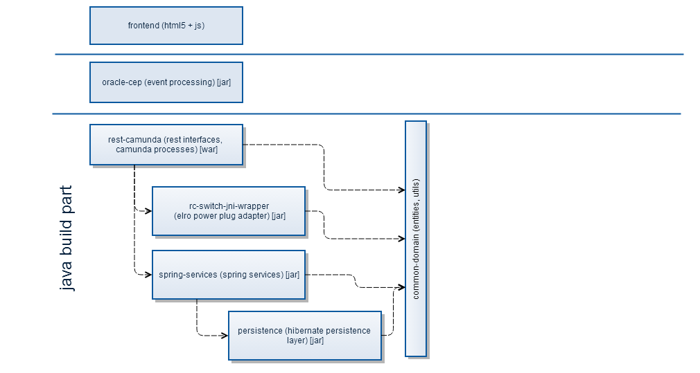
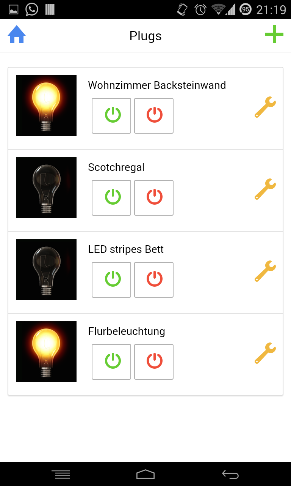
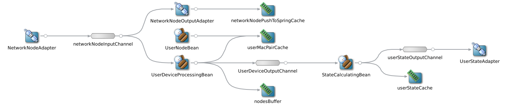
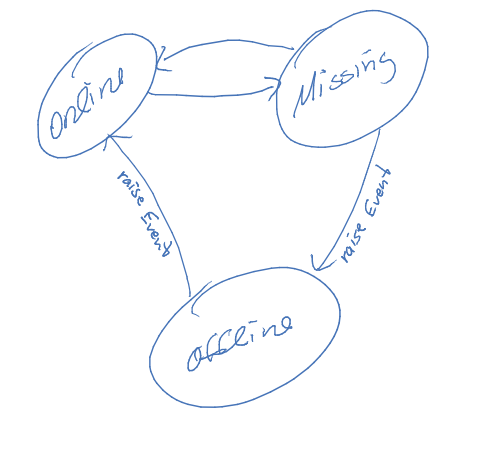

© 2014 OPITZ CONSULTING Deutschland GmbH
Section 4
Prototyparchitektur
Übersicht
Projektstruktur Maven

Frontend

Mobile Hybride Webapp
nutzt Phonegap
kommuniziert mit Backend via REST
Android / iOS
Oracle CEP EPN
(Event Processing Network)

StateCalculatingBean

nimmt UserNodeStateEvent's entgegen
hält für sich einen Speicher vor, in dem Events der letzten ~zwei Minuten abgelegt sind